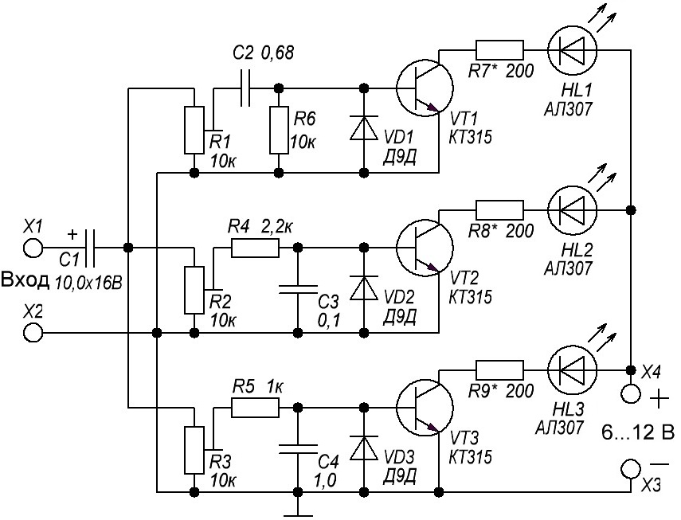

Трехканальная цветомузыкальная установка на светодиодах-3
Установка состоит из трех усилителей, собранных на транзисторах VT1–VT3. Фильтрами служат:
- высоких частот - цепь С2R6,
- средних частот - цепь R4С3,
- низких частот - цепь R5С4.
Подстроечные резисторы R1 – R3 служат для подстройки чувствительности каждого канала. Конденсатор С1 – входной развязывающий. Каждый транзисторный ключ нагружен на свой светодиод. Резисторы R7 – R9 ограничивают токи через светодиоды. Если на вход подать сигнал с громкоговорителя, то яркость свечения диодов будет дополнительно зависеть от регулятора громкости колонки.

Таблица 1
| Обозначение | Наименование | Номинал | Кол-во | Примечание |
|---|---|---|---|---|
| С1 | Конденсатор электролитический | 10 мкФ - 16 В | 1 | |
| С2 | Конденсатор | 0,68 мкФ | 1 | |
| C3 | Конденсатор | 0,1 мкФ | 1 | |
| C4 | Конденсатор | 1 мкФ | 1 | |
| НL1 - HL3 | Светодиоды | АЛ307 | 3 | HL1 - зеленый, |
| R1 - R3 | Резистор подстроечный | 10 кОм | 3 | |
| R4 | Резистор постоянный | 2,2 кОм - 0,5 Вт | 1 | |
| R5 | Резистор постоянный | 1 кОм - 0,5 Вт | 1 | |
| R6 | Резистор постоянный | 10 кОм - 0,5 Вт | 1 | |
| R7-R9 | Резистор постоянный | 200 Ом - 0,5 Вт | 3 | |
| VD1-VD3 | Диод | Д9Д | 3 | С любым буквенным индексом |
| VT1-VT3 | Транзистор биполярный | КТ315Б | 3 | С любым буквенным индексом |
В устройстве можно применить светодиоды с номинальным током не более
Питаться устройство может от любого источника питания напряжением 6-12 В, потребляемый ток – около 30 мА при указанных на схеме элементах и напряжении питания 9 В.